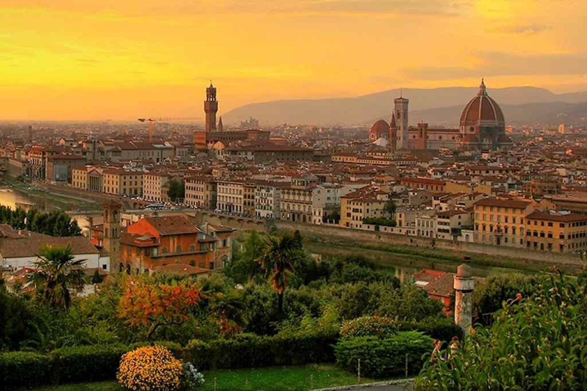

Хоббі:
Улюблені книги та фільми:
Флоре́нція (італ. Firenze) — місто в Італії, регіоні Тоскана, Флорентійській провінції. Зробило грандіозний внесок у розвиток європейської та світової цивілізації.Місто дало світові таких гігантів, як Леонардо да Вінчі, Мікеланджело, Данте і Галілей. Місцевий діалект ліг в основу літературної італійської мови, флорентійська монета стала еталоном для всієї Європи, флорентійські художники розробили закони перспективи, флорентійські мислителі започаткували епоху Відродження, а флорентійський мореплавець Амеріго Веспуччі дав своє ім'я двом континентам.
